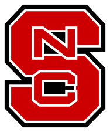
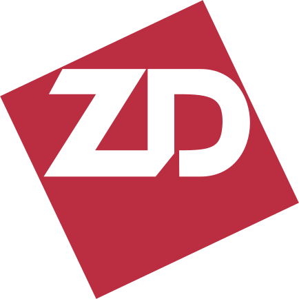
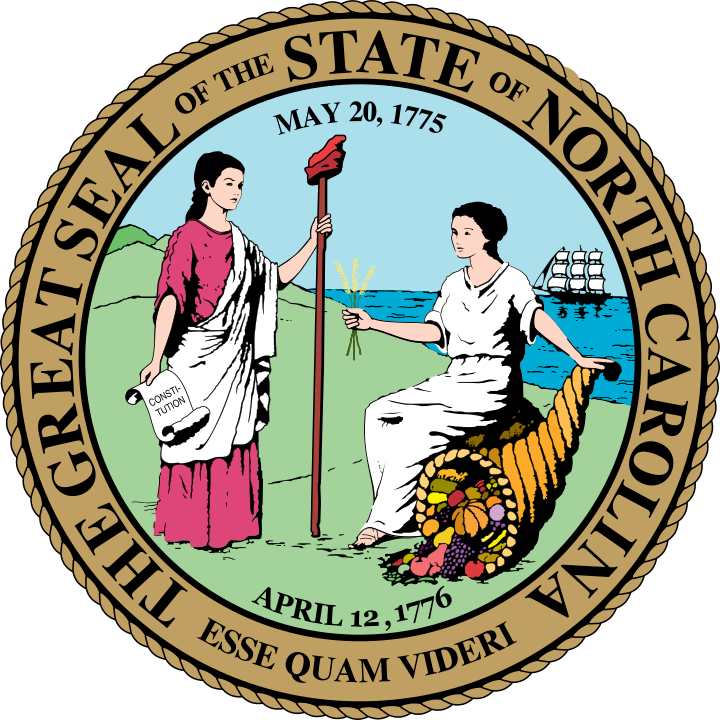

Georgia Institute of Technology
MS Computer Science
georgia_tech_logo.svg (3.5KB)
SVG — scalable, crisp at any size
University of North Carolina Wilmington
Executive MBA
uncw_logo.svg (7KB)
SVG — scalable, crisp at any size

NC State University (wordmark — hard to read small)
BS Computer Science + multiple roles
nc_state_university_logo.svg (3.3KB)
SVG — too detailed for 48-60px display
NC State University (classic 1990s logo)
BS Computer Science — student era
nc_state_classic_logo.svg (hand-built)
SVG — red square, white text, era-appropriate
NC State University (athletic block S)
BS Computer Science + multiple roles
nc_state_athletic_logo.svg (2.9KB)
SVG — bold, reads well at any size
NC Community College System
Systems Programmer
nc_community_colleges_logo.svg (14KB)
SVG — official from nccommunitycolleges.edu
NC LIVE (current dogwood logo)
Development Manager / Operations Manager
nclive_logo.svg (3KB)
SVG — current branding
Internal Revenue Service
ETAAC Congressional Subcommittee
irs_logo.svg (2.8KB)
SVG — US govt public domain
United States Postal Service (full logo)
Data Engineer
usps_logo.svg (6.4KB)
SVG — eagle too small at resume scale
USPS Eagle (cropped — for resume use)
Data Engineer
usps_eagle_logo.svg (1.5KB)
SVG — eagle fills the space, reads well

SAS Institute, Inc.
Systems Administrator
sas_logo.svg (6.2KB)
SVG — horizontal wordmark
American Kennel Club (shield only — for resume)
Cloud Architect
akc_shield_v2.png (23KB, 284x277)
PNG — rendered from SVG, cropped to shield
American Kennel Club (full logo with text)
Cloud Architect
american_kennel_club_logo.svg (85KB)
SVG — shield too small when text included
Measurement Inc ("M" mark only)
Senior Systems Programmer (AI)
measurement_inc_mark.svg (0.5KB)
SVG — bold M fills the space
Measurement Inc (full horizontal logo)
Senior Systems Programmer (AI)
measurement_incorporated_logo.svg (71KB)
SVG — too wide/small at resume scale
BD (Becton Dickinson) — modern mark
IT Engineer (IT Director)
bd_logo.svg (5.7KB)
SVG — bold blue BD mark
Becton Dickinson — older wordmark
IT Engineer (IT Director) — era-appropriate
becton_dickinson_logo.svg (4.3KB)
SVG — classic Becton Dickinson text

Ziff-Davis Publishing (1990s ZD mark)
Benchmark Developer
ziff_davis_zd_logo.svg (1KB)
SVG — classic interlocking ZD
Ziff Davis (modern wordmark)
Benchmark Developer (alternate)
ziff_davis_blue_logo.svg (7KB)
SVG — modern blue wordmark

State of North Carolina (Official Seal)
Generic fallback for NC state roles
seal_of_north_carolina.svg (460KB)
SVG — detailed official seal